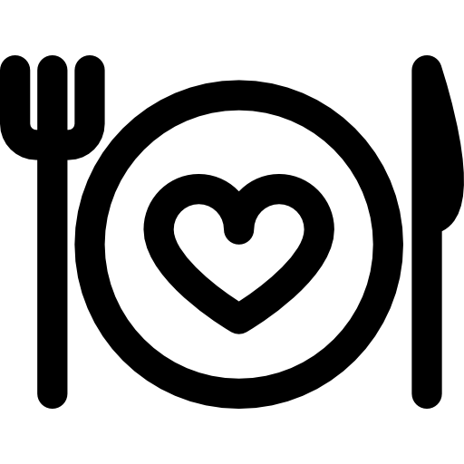

Como garantir uma boa saúde

Alimentação Saudável
Uma alimentação balanceada é muito importante para se obter uma vida saudável

Exercício Físico
Manter atividades físicas ao longo da vida é essencial
Massa Corpórea
Manter um peso adequado à idade que possui é de suma importancia
Cigarro / Tabaco
Manter-se longe do cigarro, além de ser favorável para sua saúde, evita com que fique com aparência envelhecida ainda jovem